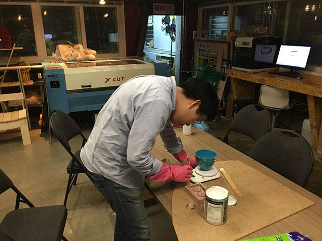

9. Molding and Casting
Design a 3D mold ,machine it, and cast parts from it
3D Design of mold
e-machineshop made vector image |
Rough sketch for gear mold |
At first i got a recommendation of using the open source for making tools as there are lots of measurements and tolerance to think about when actually using the gear in real life. I've downloaded e-machineshop program that i searched on the net. exported as ai image and on illustator exported as dxf file to open on vCarvePro
----------- At this time I wasn't sure how to fix problem with open vector image on VCarve, therefore I changed it to the program that I can make 3D mold gear myself. I 'm right now kind of got used to fixingthe problem of vector image.
 |
||
Rotating sketch(for teeth) extruding |
Sketching the teeth for gear |
Sketching the teeth for gear |
This is me checking the toolpath on Fab Modules. I tried to use the fab modules to make shp files and use was as a mold
Making mold with CNC
Rotating sketch(for teeth) extruding |
Sketching the teeth for gear |
I'ved tried to upload my stl file to fab modules to check the toolpath for roughing and cutting. The problem happend when i was uploading the file on Moldea 4.0X program that it scaled my model file by 1/10 and therefore the program couldn't make path between the teeth and I found that It initiates my model size by 1/10 ratio. I couldn't find out why it does so right now I'm manually putting the extra zeros to makeit in real-size the i measured
I had to change my mold as i had to use other CNC machine 'model MDX-40A' by Roland and obviously i forgot to bring my molding wax to the Creative Device Lab which is other makerspace where i often dropby using the other machine I could accurately cut out the teeth of my molding design. I used two kinds of drills '1. 3pi round 2leaves drill for ROUGHING 2. 1.5 pi round 2leaves for finishing. The material that i used was chemical wood that i coould use as a leftovers. I've measured six different width,length and heights.
CNC cutting in progress |
CNC cutting (finishing) |
The finished cut of 3pi roughing toolpath and It made a lot of mess. and as the Roland MDX 40A can cut the model in 3D it's going to finish the rough cut by rotating the block in 180 degrees.
Mold made out of ShopBot |
Mold made out of MDX 40-A |
From experience with making the mold with Plywood and Shoptbot on the left, I had a failure of not thinking thoroughly about height. Next time, Therefore, from MDX-40A I made sure the height is well good enough for making the mold and making it sure to have decent height for casting at the end.
Preparing mold
I mixed both silicon PART A which is main material and PART B (curling agent) by the ratio of 10 : 1, measured with electric scale and to mix 42g of PART A and 4g of curling agent.
Part A & Part B of silicon |
Mold(complete) |
Bubble fixed |
Pouring Silicon done |
With less care and the condition of silicon I've made lots of bubbles and it's not looking great. I did trick that was told by everyone which is banging the whole plate to the desk about 100 times more or less to make my last effort. The silicon-can that i used was already opened and used by other users so i guess maybe the silicon was not in a perfect state for use however I think it's better to take lots of care when pouring the material and take lots of effort.
In conclusion it didn’t matter if I had used pre-opened silicon what so ever, the most important thing is to make thinnest thread and give it a careful try not to make air bubbles inside. No rush and take it very slow when you are dealing with delicate toolpaths. Such as mine needed a toolpath for gears so therefore, It was necessary to check the mill and the modeling file I’ve designed.
Molding and casting process
 |
|
Checking with scale 10 : 1 (Part A : Part B) |
Molding casting video |
Pouring technique is necesaary At first, I couldn't quite get how much of silicon that i needeed to cover all my mold. when pouring the silicon i had to squeeze and make a thinnest thread i can make so it takes time but the good thing is that i can always check the status of bubbles.
cASTing
Leftover filament of PLA |
Filament in cooking pot |
 |
|
Hardened PLA |
Casting of Silicon in final mold |
For casting which I've done after the regional review was done, I wanted to try something new trial with making the cast. Which is using the leftover filament in Fab Lab Seoul. I managed to get some filament just enought amount that i need to make the cast. However, As I was heating the cooking pot with heat gun, I felt something as going wrong and I didn't have no idea of getting the melted filament to pour as it driied and hardened in just a blink of an eye.
Another failure was making the cast in same material, I knew somhoew using the same material was going to make parts stuck togetehr, but since the mold was too old and I wanted to try If it's going to work and there is another failure my mold and cast in just one unibody impossible for me detach. However, As shown on the pictrue the teeth of a mold is still alive and not attached like a whole thing. I wanted to tryout my mold but as you can see the as I tried the mold in the same material It's very stuck and I can only get the gear out with separating with knives or other thing
what i did ...
CAD Design : Autodesk Inventor
eMachineshop : Opensource gear program
Wooden Mold : Shopbot
Molding Wax : Roland SRM-20
Chemical wood cutting : Roland MDX 40-A
Silicon molding : Shin-etsu silioncs (PART A & PART B)
PLA melting : Fab Lab Seoul PLABS blue pla filamnet for casting